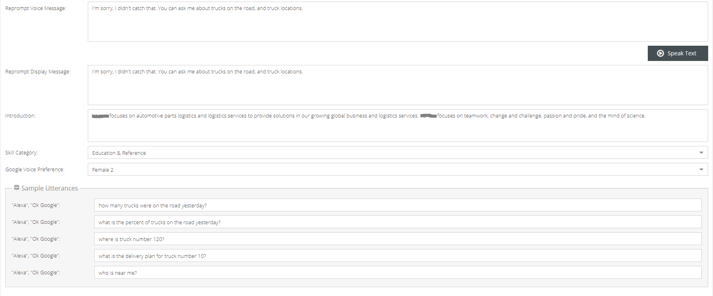
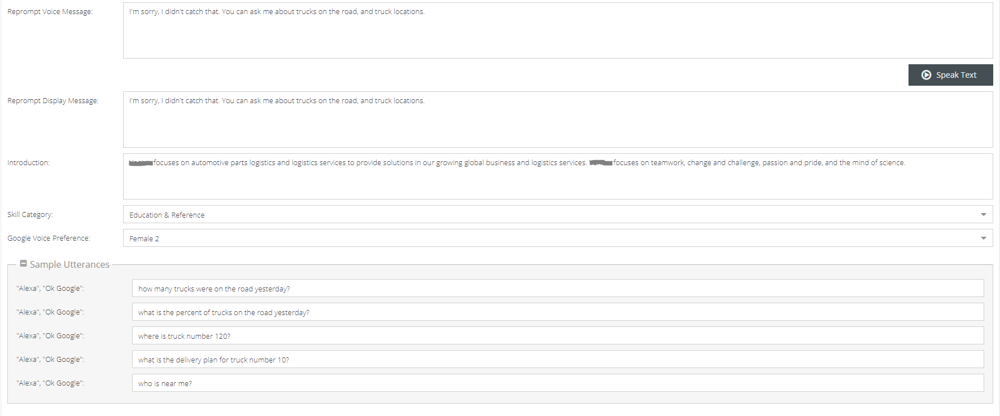
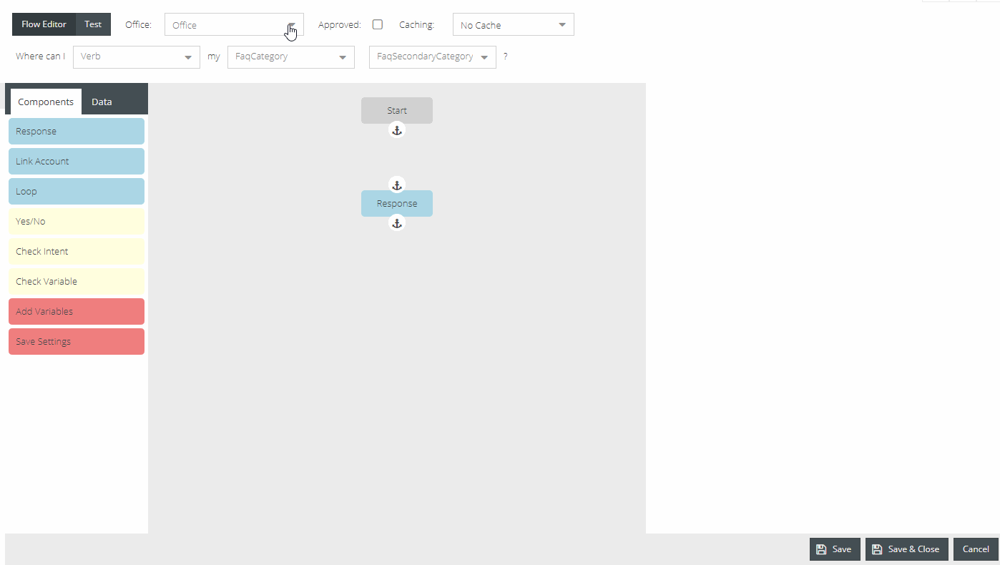

Settings¶
Include paragraph about settings
General Tab¶
 


Invocation Name¶
- The invocation name is how the skill will be invoked by users. Also known as wake word. It is recommended to make the invocation name two words.
Alexa Skill and Google ID¶
- This ID is unique for each tenants’ skill. This is how the server will register a specific skill.
- Enter the skill ID associated with the Amazon Alexa skill that was created.
For instructions on setting up the Alexa skill account please see blank section
Reprompt Message¶
- This message will be relayed to a user when their questions was not understood. Meaning, Alexa understood she was spoken to but could not make out what was asked.
Speak Text Button¶
- This button allows a manager to test what the voice message will sound like.
Note:Voice is what Alexa will speak. Display is what she will show, if using a screen. Please refer to writing section to better understand how to write messages that will be spoken.
News Feed¶

News Feed URL¶
- Enter RSS feed in this field.
Refresh¶
- Ability to refresh news has options for daily or hourly.
- It is recommended the frequently refresh new content being made available to the community.
Empty Message¶
- This message is what Alexa Communicates when there is no new content to give.
Days to Reference¶
- Allows Alexa to search further than the day content was requested, upon finding no new content for that day.
Remove Text¶
- If RSS cuts off a story, this text box allows for a custom message to direct users further.
Sync Data Button¶
- Sync most updated data.
Clear All Data¶
- Clears all data.
Slots¶
The primary function of this page is to create values to further be used within the management system. The drop down contains a list of predetermined slot categories, values to be added will correspond to these categories. This section can best be thought of as a word bank, adding words (values) that relate to each category. Please see below for further examples.

Example of values created within the Verb slot
Values created within this page will give content to choose from slot categories when creating/editing FAQs and Events
See Slots Settings Guides here: Settings Guides
Integration¶
- If their are open source connectors, they can be added under Integration.
- Click add
- Select account type
- Input information for data to be queried
Specific to helping pull events and interaction information

Roles¶
Example of creating role specific for Events and Event management

Ability to create context driven roles for users. Users with specific roles would only be able to view and work within the roles they have been assigned.